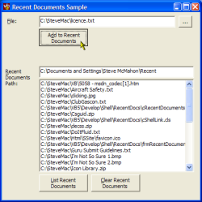

Recent Documents Sample (49K)
Recent Documents Sample (49K)
 12 Feb 2003
12 Feb 2003
First Posted
 VB IShellLink Interface (ShellLink.tlb)
VB IShellLink Interface (ShellLink.tlb)
 IShellFolder Extended Type Library Version 1.2 (ISHF_Ex.Tlb)
IShellFolder Extended Type Library Version 1.2 (ISHF_Ex.Tlb)

Adding, Deleting and Viewing Recent Documents
Gain full access to the Shell's Recent Documents using these classes
This sample demonstrates how to add, read and clear the Shell's Recent Document List from VB code. At the same time, it provides a useful ShellLink class for working with Shortcuts.
The Shell's Recent Document List
The recent document list has been supported in Windows since 95 and NT4.0. You can use the functions to enhance applications which work with files; either by adding the file to the recent document list whenever it is opened or saved or by listing recent files for the user to select from.
The sample provides the cRecentDocuments class to assist with working with the recent document list. The properties and methods of this class are as follows:
- AddToRecentDocs(file)
Adds the specified file to the recent document list. - Clear
Clears all of the files from the recent document list. - Path
Returns the path of the user's recent document directory. - Count
Returns the number of items in the recent document list. - Item(index)
Gets the a cShellLink object containing the shortcut holding the specified item in the recent document list.
The cShellLink object allows you to read the details of an existing shortcut (as well as create new ones or modify existing ones, although this would not be recommended on the Recent Document list since the Shell may get out of sync with the contents in the directory). This object will be covered in a forthcoming sample.